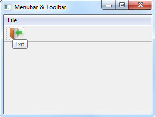

На этом шаге мы рассмотрим назначение, иерархию наследования, форматы конструктора и основные методы этого класса, а также небольшой пример создания панелей инструментов.
При добавлении действия на панель инструментов автоматически создается кнопка, представляемая классом QToolButton. Получить ссылку на кнопку позволяет метод widgetForAction() класса QToolBar. Иерархия наследования для класса QToolButton выглядит так:
(QObject, QPaintDevice) - QWidget - QAbstractButton - QToolButton
Конструктор класса QToolButton имеет следующий формат:
<Объект> = QToolButton([parent=None])
В параметре parent указывается ссылка на родительский компонент.
Класс QToolButton, помимо методов базовых классов, поддерживает следующие методы (здесь приведены только основные - полный их список доступен на странице https://doc.qt.io/qt-5/qtoolbutton.html):
- setDefaultAction (<QAction>) - связывает объект действия с кнопкой. Метод является слотом;
- defaultAction () - возвращает ссылку на объект действия (экземпляр класса QAction), связанный с кнопкой;
- setToolButtonStyle (<Стиль>) - задает стиль кнопки. Метод является слотом. В качестве параметра указываются следующие атрибуты класса QtCore.Qt:
- ToolButtonIconOnly (или 0) - отображается только значок;
- ToolButtonTextOnly (или 1) - отображается только текст;
- ToolButtonTextBesideIcon (или 2) - текст отображается справа от значка;
- ToolButtonTextUnderIcon (или 3) - текст отображается под значком;
- ToolButtonFollowStyle (или 4) - зависит от используемого стиля;
- toolButtonStyle () - возвращает стиль кнопки;
- setMenu (<QMenu>) - добавляет к кнопке меню;
- menu () - возвращает ссылку на меню (экземпляр класса QMenu), добавленное к кнопке, или значение None;
- showMenu () - отображает меню, связанное с кнопкой. Метод является слотом;
- setPopupMode (<Режим>) - задает режим отображения связанного с кнопкой меню. В качестве параметра указываются следующие атрибуты класса QToolButton:
- DelayedPopup (или 0) - меню отображается при удержании кнопки нажатой в течение некоторого промежутка времени;
- MenuButtonPopup (или 1) - справа от кнопки отображается кнопка со стрелкой, нажатие которой приводит к немедленному открытию меню;
- InstantPopup (или 2) - нажатие кнопки приводит к немедленному открытию меню. Сигнал triggered() при этом не генерируется;
- popupMode () - возвращает режим отображения связанного с кнопкой меню;
- setArrowType (<Тип иконки>) - позволяет вместо стандартного значка действия установить значок в виде стрелки, указывающей в заданном направлении. В качестве
параметра указываются атрибуты:
- NoArrow (значение по умолчанию),
- UpArrow,
- DownArrow,
- LeftArrow или
- RightArrow
- setAutoRaise (<Флаг>) - если в качестве параметра указано значение False, кнопка будет отображаться с рамкой. По умолчанию кнопка сливается с фоном, а при наведении указателя мыши становится выпуклой.
Класс QToolButton поддерживает сигнал triggered(<QAction>), который генерируется при нажатии кнопки или комбинации клавиш, а также при выборе пункта в связанном меню. Внутри обработчика через параметр доступно соответствующее действие.
В заключение приведем небольшой пример создания и использования панели инструментов. Добавим в приложение из 274 шага панель инструментов (добавленные строки выделены комментариями):
# -*- coding: utf-8 -*- import sys from PyQt5.QtWidgets import QMainWindow, QAction, qApp, QApplication from PyQt5.QtGui import QIcon class Example(QMainWindow): def __init__(self): super().__init__() self.initUI() def initUI(self): exitAction = QAction(QIcon('exit.png'), '&Exit', self) exitAction.setShortcut('Ctrl+Q') exitAction.triggered.connect(qApp.quit) menubar = self.menuBar() fileMenu = menubar.addMenu('&File') fileMenu.addAction(exitAction) # ======= Добавили панель инструментов toolbar = self.addToolBar('Exit') toolbar.addAction(exitAction) # ======= Завершение добавления self.setGeometry(300, 300, 300, 200) self.setWindowTitle('Menubar & Toolbar') self.show() if __name__ == '__main__': app = QApplication(sys.argv) ex = Example() sys.exit(app.exec_())
Результат работы приложения показан на рисунке 1.

Рис.1. Результат работы приложения
На следующем шаге мы рассмотрим прикрепляемые панели.